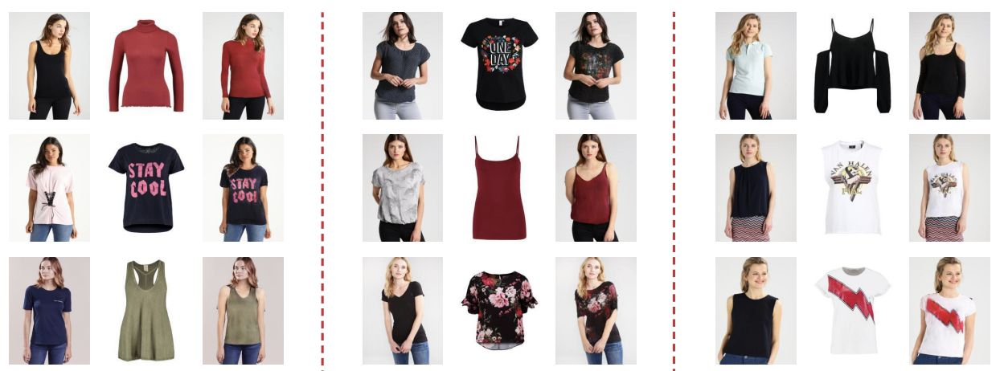

Garment transfer using GANs
Problem statement
Ever wonder how you would look in a certain t-shirt or pair of shoes without having to try it on? Well, that’s the problem that garment transfer is trying to solve. Given an image of a person and piece of clothing as input, the goal is to get a photo-realistic picture of that person wearing that piece of clothing.
Garment transfer existed as science fiction for a long time, but only recently became possible to solve with the advent of GANs. Since, it has already evolved into a popular subtopic for research and seen a lot of progress, as can be seen on the figure below.
Garment transfer comes in a variety of flavours with slight variations on the inputs (e.g. from a single image of the clothing that should be transferred, to a collection of images, to an image of another person wearing the clothes that should be transferred), but in general the problem can be divided into 2 subproblems. First the algorithm should learn to separate a person’s body (pose, shape, skin color) from their clothing. Secondly, it should generate new images of the person wearing a new clothing item. The outputs also come in different forms and range from generating a single image, to generating a full 3D clothing transfer [8] where images of different viewpoints and poses can be generated.
While there is growing interest, garment transfer still faces major challenges in developing effective algorithms. These challenges are summarized below:
- Hard to obtain suitable datasets for both training and evaluation. As of today, there are no easy ways to obtain a dataset for the training of garment transfer models. An ideal dataset would contain multiple images of a particular clothing item from different viewpoints, pictures of different people wearing those clothing items and pictures of the same people wearing different clothing items.
- There is a large difference between the transfer or clothing with complex patterns and simple clothing such as for example a plain white t-shirt. With the transfer of complex patterns it’s hard to both match the target person’s body shape and keep the styling intact.
- The diversity of problem statements for garment transfer make it hard to see the forest for the trees. Because of the slight variations in both input and output, it’s hard to unify the advancements in the field and obtain a clear view of the current state of the art.

Goal
Because garment transfer research is still in its infancy and due to the lack of consensus on how to approach the problem, it can be hard to see the forest for the trees. The goal of this thesis is twofold. First, the student should investigate different approaches and identify their advances along with an analysis and comparison of their advantages and drawbacks. Second, the student should elaborate on the best approach and invent techniques to overcome the remaining limitations.
ML6
This thesis is in collaboration with the company ML6, a fast-growing machine learning services company based in Ghent, with additional offices in Amsterdam, Berlin and London. They deliver specialized engineering, research, and consulting services to clients active in a broad range of sectors. Technical areas of expertise include machine vision, natural language processing, time series analysis and reinforcement learning.
This thesis is being conducted by Andreas Mechelinck (Andreas.Mechelinck@UGent.be).